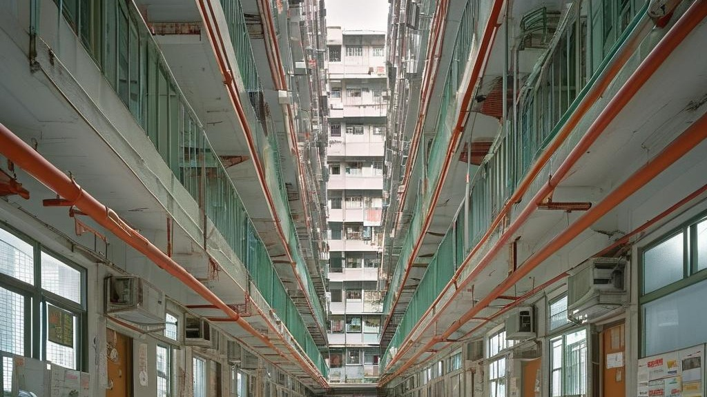
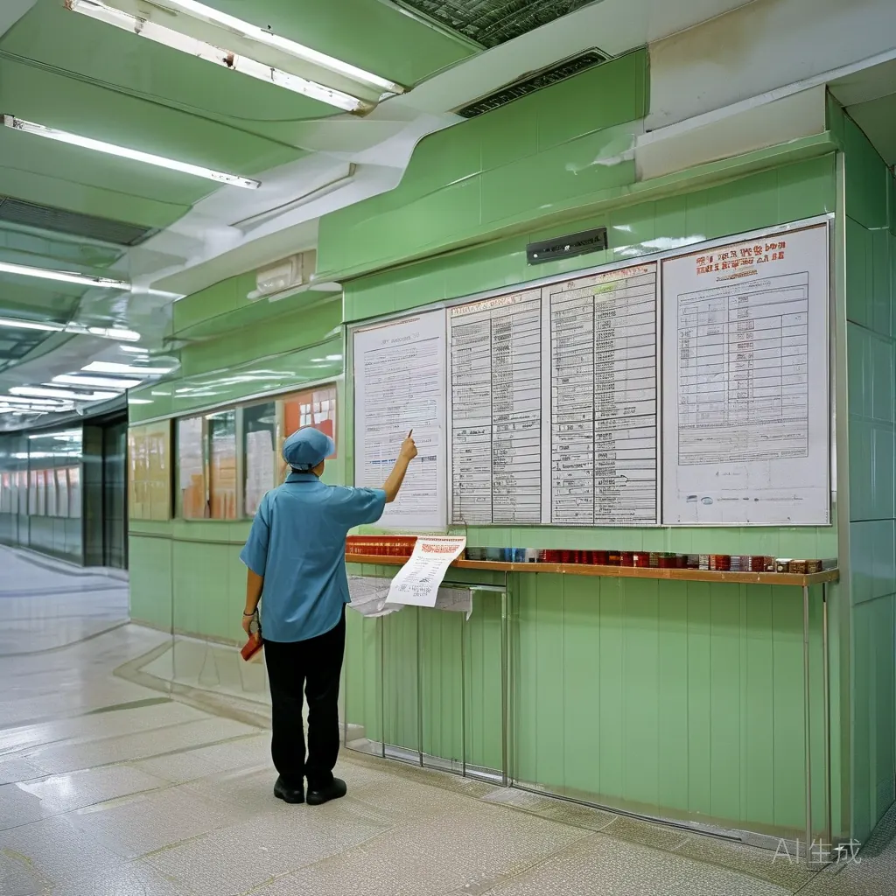
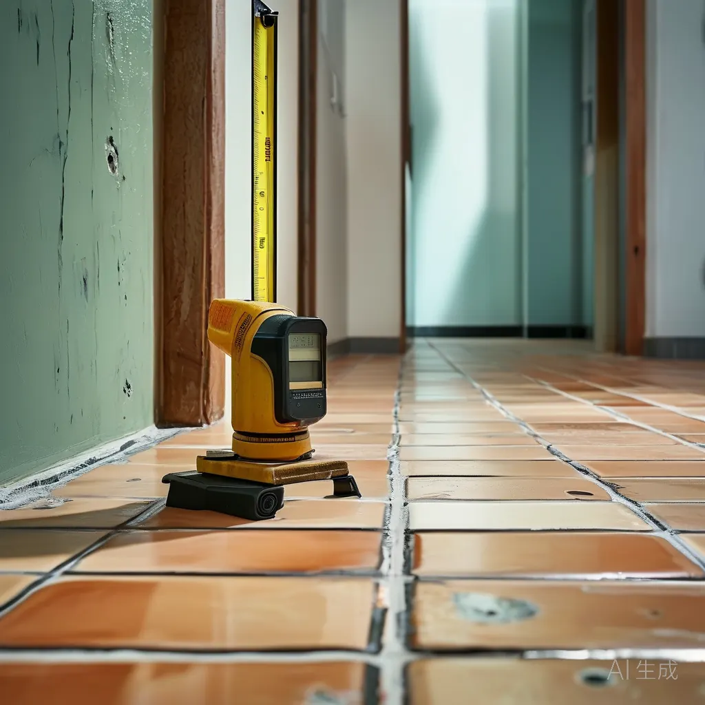
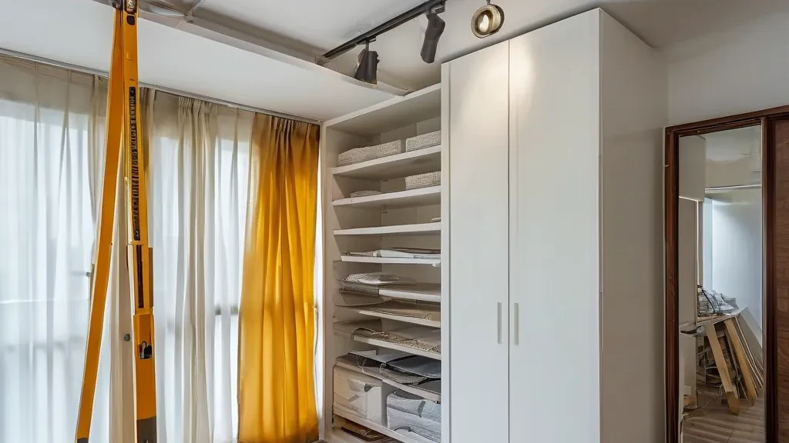
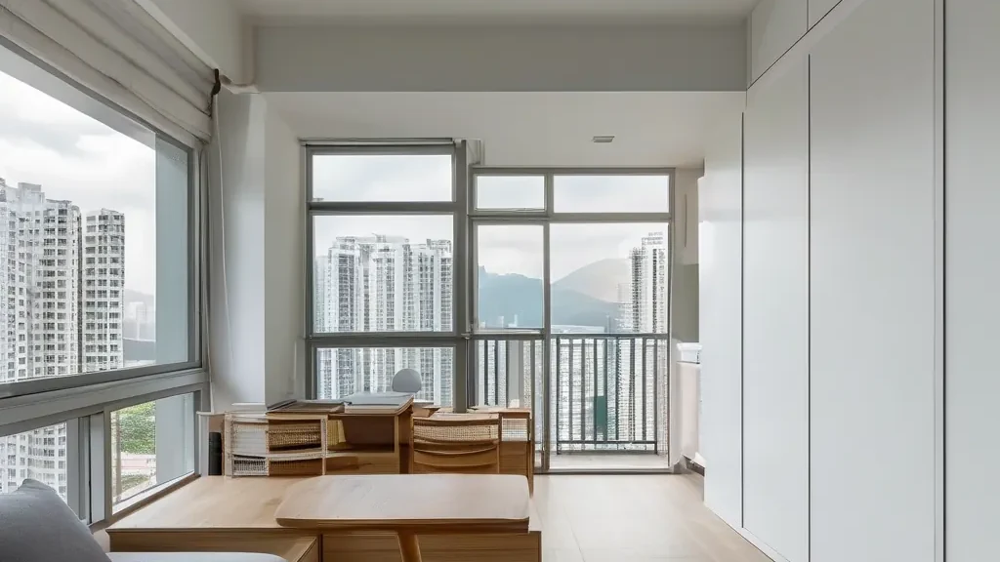

公營房屋樓宇管制組成立：陳師傅教觀塘420呎租置戶做定制

📍 場景：觀塘租置屋邨 420 呎兩房｜主訪：陳師傅（25 年，公屋單位）｜記錄：張丹楓｜整理：雲蕾｜日期：2026 年 11 月 24 日｜WhatsApp 報價：852 5190 2328
序幕：兩張紙，同一個問題
岑太住觀塘一幢 1985 年落成的租置屋邨，420 呎兩房，一家三口，兒子讀中三。單位她七年前向房委會買斷，之後一直沒動過，直到今年兒子要一張真正的書桌，廚房那幅半牆又擋住飯桌位，她才認真想裝修。
她那日約我們上樓，手上拿著兩張紙。一張是管理處發的裝修申請表，另一張是手機截圖，日期是 2026 年 11 月 23 日，標題寫住「房屋局『公營房屋樓宇管制組』今日成立」。
她把截圖推到我面前，第一句就問：「張生，係咪以後公屋、居屋都唔可以隨便裝修？我呢個單位係買咗嘅，都算公營房屋？」
這條問題，11 月 23 日之後一定會有更多人問。我請陳師傅一齊上樓，他做了 25 年公屋單位，房署驗收那套規矩他比我熟。
第一幕：管制組管的，是屋苑那一層
先把新聞講清楚。2026 年 11 月 23 日 18 時 10 分，房屋局發稿宣布「公營房屋樓宇管制組」正式成立，取代原有的獨立審查組。適用範圍寫得很具體：房委會已出售或分拆出售的公共屋邨、資助出售屋苑及相關設施的現有樓宇及維修工程；同時規管房委會正在興建的新公營房屋項目，包括出租公屋及資助出售房屋，以及沒有分拆出售的現有公共屋邨的相關工程。
組內設兩個分組：新發展工程分組、規管現有樓宇分組。大型維修以每個屋苑的項目為基礎統籌，並成立項目專隊，先協助五個正在做大型維修的屋苑，每苑一位聯絡專員，已主動聯絡業主立案法團。
改善措施有六項：針對性監管大型維修、增設常規突擊巡查、加強監察註冊檢驗人員和承建商、善用科技打擊造假、跨部門資訊互通，以及嚴格執行消防預防措施。過渡安排也寫明：11 月 23 日前由獨立審查組發出的文件，包括《建築物條例》下的命令及通知，繼續生效；之前呈交的申請和舉報由管制組接手，市民不用重新提交。
「你睇清楚個範圍：管制組管嘅係屋苑嘅現有樓宇同維修工程，即係棚架、外牆、天台、公用喉、消防裝置。你屋企個廚房、衣櫃、地台，唔係佢直接管。」
但這不代表屋內可以亂做。岑太的單位屬於已出售的租置單位，公契和大廈守則仍然有效，屋內改動另有一套規矩：管理處的裝修守則、屋宇署的小型工程監管制度、《建築物條例》。兩套規矩同時存在，開工前兩邊的文件都要齊。

第二幕：三條界線，量清楚才動手
岑太想要三樣：拆廚房半牆、換廳的鋁窗、做一個入牆到頂衣櫃。陳師傅逐樣拆。
第一條界線：外牆、結構牆、公用喉。鋁窗屬於外牆開口，換窗多數要跟大廈統一的顏色和規格，要向管理處交圖，部分屋苑由法團統一招標，業主自己另找承建商往往過不了關。廚房那幅半牆，要看圖則：150mm 厚、內有鋼筋的通常是結構牆，不能動；100mm 磚間隔或輕鋼龍骨間隔屬非結構，才有機會拆。
第二條界線：固定裝置和可移動傢俬。浴室、廚房的改動牽涉防水和來去水位。防水要做兩層，英泥彈泥加玻璃纖維網，試水時企缸 48 小時、其他位置 24 小時，樓下單位要通知。這一項在屋邨尤其敏感，漏一滴水，樓下就是一個投訴個案。
第三條界線：申報。屋宇署的小型工程監管制度把工程分級，部分室內非結構間隔、通風管道工程屬第 III 級別，要由註冊小型工程承建商施工並呈報；電力、氣體工程要持牌人士做。這張紙不是形式，出事時保險公司第一句就問你有沒有。
「咁我個廚房半牆，到底拆唔拆得？」
「我唔會而家答你。我要先去管理處調圖則，睇嗰幅牆有冇鋼筋。拆得嘅話要申報；拆唔得，我哋用玻璃趟門做半開放式，一樣解決飯桌位嘅問題，仲快兩個禮拜。」

第三幕：免鑽牆不是將就，是一套力學
圖則兩日後到手，那幅廚房牆是 100mm 磚間隔，非結構。但陳師傅仍然建議岑太不要拆，改用 8mm 磨砂玻璃趟門。原因很實際：牆後有來水喉和一條電線管，改位要拉過整間屋，費用和風險都不值得。
於是衣櫃和地台全部改用免鑽牆做法。很多人以為免鑽牆等於擺上去、唔穩陣，其實是另一套力學。
頂天立地柱上下用可調節頂腳撐住天花和地板，微調幅度大約 ±20mm，靠壓力固定，不落膨脹螺絲。櫃體用 18mm E0 多層實木夾板，櫃與櫃之間用 8mm 連接件互鎖，整排櫃變成一個框架。背板離牆 15mm 留通風縫，貼 2mm 防潮墊，邊位打防潮玻璃膠。地台用可調腳加 2×4 杉木龍骨，間距 30cm，面板 18mm 夾板，上面鋪 8mm 纖維地板，全程一粒釘都沒有打進原地台。五金用 304 不鏽鋼鉸鏈，氣壓桿承重 8kg，開關五萬次是基本要求。
現場文件只有三件，缺一件都會被管理處叫停：單位圖則、裝修申請表連按金收據、承建商商業登記和註冊小型工程承建商編號。突擊巡查制度下，施工紀律也是驗收的一部分：走廊鋪保護板、櫃身包塵網、泥頭袋裝、每日清場、消防通道不許擺料。
「你個單位做完之後，牆上應該一個新孔都冇。將來賣樓或者交還，管理處睇唔出你做過裝修，呢個就係免鑽牆最值錢嘅地方。」

尾聲：制度管屋苑，洞是你自己決定
交貨那日，岑太的兒子第一件事是拉開書桌下面那格抽屜，試了三次，然後把書包放進去。櫃門關上，縫隙 2mm，櫃腳下面一個孔都沒有。
岑太把按金收據收好，問我：「咁個管制組成立，對我係好事定壞事？」
制度變密，文件變多，對趕時間的業主一定不算好消息。但對一個準備住十年、二十年的人來說，屋苑的大維修有人用突擊巡查盯著、註冊檢驗人員和承建商有人監察、造假有人用科技去查，這些都是替你守住樓價和安全的東西。
全屋連廚房重做、玻璃趟門、到頂衣櫃、客廳地台，套餐落在 $35,000 至 $38,000 這個區間（故事報價，實際以度尺為準）。價錢是死的，規矩是活的：開工前問清楚三條界線，你家裡有幾多個洞，由你自己決定。

❓ 公營房屋裝修三問
Q1：新成立嘅「公營房屋樓宇管制組」，關唔關我間居屋／租置單位室內裝修事？
管制組主要管屋苑那一層：已出售或分拆出售的公共屋邨、資助出售屋苑的現有樓宇及維修工程，大型維修以每個屋苑為單位統籌，並設聯絡專員對法團。單位內部裝修就由管理處裝修守則、屋宇署小型工程監管制度及《建築物條例》規管。兩套規矩同時適用，所以開工前兩邊的文件都要備齊，具體要求以房屋局及屋宇署公布為準。
Q2：租置單位想拆廚房半牆，係咪一定唔批？
不一定，關鍵是那幅牆是否結構牆。150mm 厚、內有鋼筋的通常是結構牆，不能拆；100mm 磚間隔或輕鋼龍骨間隔屬非結構，但要先查單位圖則，按管理處及屋宇署要求申報，並由合資格承建商施工。廚房牆後面往往有來水喉和電線管，拆之前要確認管線走向，很多時候改成半開放式加玻璃趟門，比拆牆更省事。
Q3：免鑽牆定制會唔會唔穩陣？
承重靠的是力學點，不是螺絲數量。頂天立地柱上下用可調頂腳撐實天花與地板，每個櫃獨立成框再用 8mm 連接件互鎖，地台用可調腳加 30cm 間距龍骨，受力分散到多點。前提是天花和地板夠平，2 米範圍內誤差控制在 3mm 以內，安裝前要逐點用水平尺量。平地台、實天花，這種做法做十年都不會變形。
本文配圖均為 AI 場景示意圖，僅供場景參考，並非真實工地照片或業主影像。
想知你個單位裝修要幾錢？
📱 一鍵 WhatsApp 張丹楓